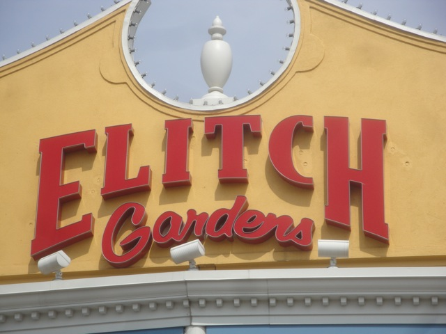
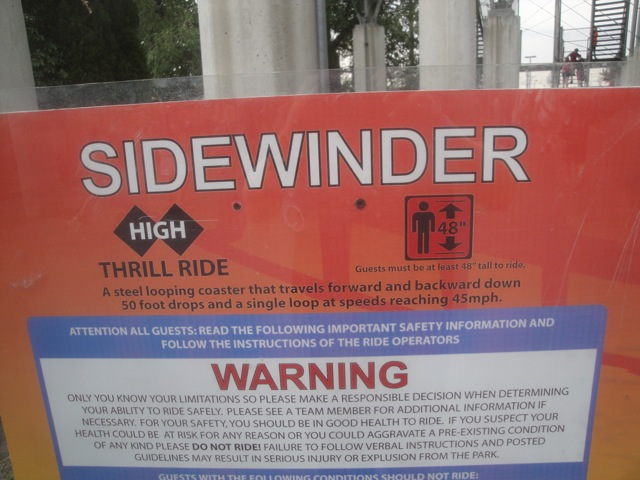
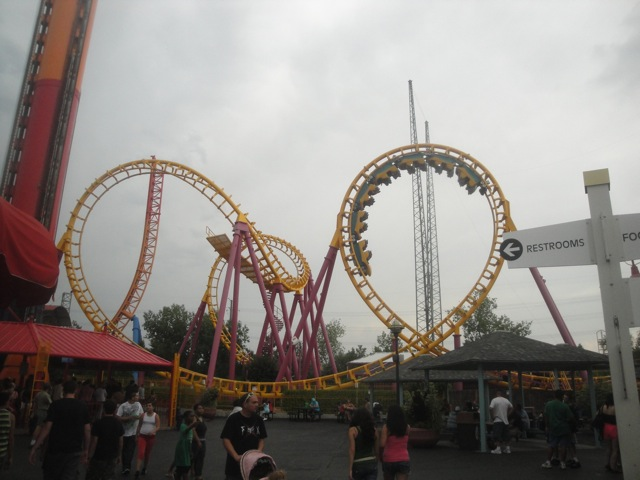
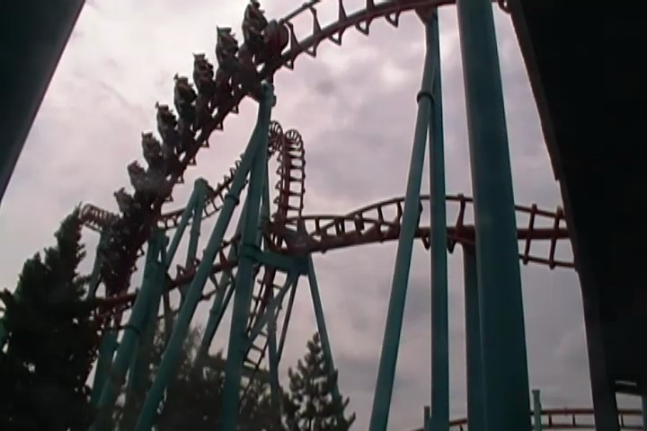
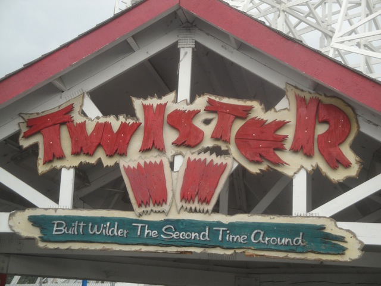
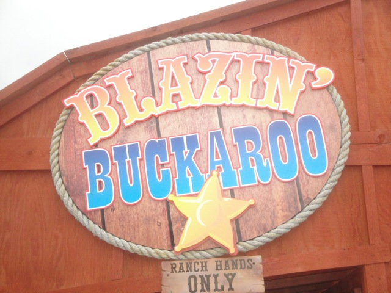
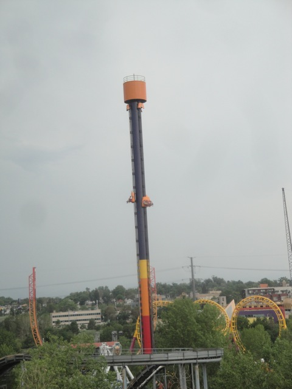
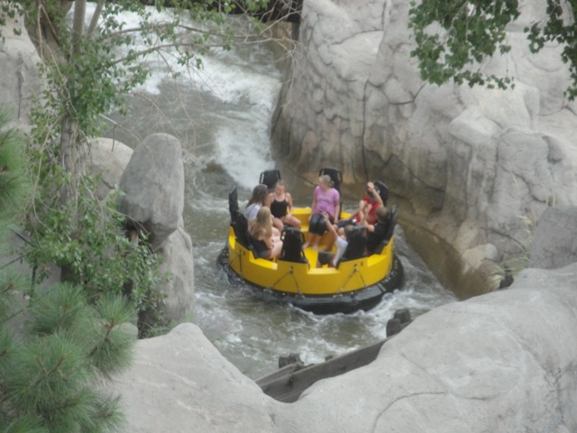
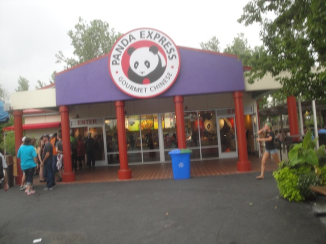

| |
Elitch Gardens Review

Elitch Gardens is a mid-sized park smack dab in the middle of Denver. And while it's not a bad park by any means, it also doesn't really have anything at the park that really stands out. I mean, yes. There are some unique coasters at the park that are hard to find, such as Half Pipe and Sidewinder, both of which are extremely uncommon rides. Though while uncommon, they are still clones. And then there's the rest of the coasters. A Boomerang and an SLC are about as typical and as standard as one can possibly get. And while Twister II is fun, it's also as dull as cardboard and nothing to write home about (but more about that in my Twister II review that you can read down below). So yeah. The coaster selection is pretty crappy and will not make most coaster enthusiasts happy. Though it's not a bad park. I mean, even with a bad coaster collection, I can definetly think of worse parks. There's certainly nothing wrong with the operations at the park, or just how the park is run in general. And while I know some may be rolling their eyes and saying "It's a local park! It doesn't need anything to stand out!". And while yes, Elitch Gardens is definetly a local park. No question about that. But local parks can still build intersting and unique coasters without having to compete with other nearby parks. But hey, keep reading and you can find out just what all that Elitch Gardens has to offer.
Rollercoasters
There is a link to a review of all the Rollercoasters at Elitch Gardens.
Please keep in mind that there is no review of Half Pipe because it was closed when I last visited. =(
Top Coasters
Sidewinder Review

Meh Coasters
Boomerang Review

Mind Eraser Review

Twister II Review

Kiddy Coasters
Blazin' Buckaroo Review

Flat Rides
Here are the reviews of all the Flat Rides at Elitch Gardens. And yeah. The flat ride selection at Elitch Gardens isn't really anything special, but they do have a couple fun flat rides, mainly that being an Intamin 2nd Generation Drop Tower. Yeah, it's not that special, and yeah. It's also a really small one. But you know what? It's fun dammit. And it's one of the best rides in the park, even if it is a really small drop tower. And hey. It has a single riders line. So you will probably get a chance to get on it sometime. So that's fun. I also managed to ride the parks troika as well as their breakdance. The troika is just a troika, and sadly, their breakdance runs a really lame program. Seriously, they need to spin that thing much more. But whatever. I'm sure the locals probably like it. The park also has a Super Loop, a pirate ship, a spider, some chairswings, a tilt a whirl, some teacups, a thunder bobs, a ferris wheel, and a carousel. None of which are that impressive. But hey. They have a drop tower. That's at least something fun, even if it's not special at all.

It may be small, but I like it.
Water Rides
The water ride collection at Elitch Gardens is nothing special. All they have is the standard shoot the chutes, which is the same as every other one that was ever built. And then there's their rapids ride. Now I never rode their rapids ride, but I did look at it. It seemed all right. Seemed to be a standard rapids ride, fun but nothing special. But then again, what is special at Elitch Gardens?

"Water Water Everywhere. We're gonna get wet!".
Water Park
And then there's their water park. I can't judge since I never visited it, but it is included in with admission to Elitch Gardens. And from what I saw, it does look pretty cool. Honestly, the rest of Elitch Gardens is so standard and uninteresting that when I go back, I'm probably going to spend the majority of my time here.
Dining
Once again, Elitch Gardens has nothing special to talk about in this department. I actually wound up eating at the park since the day before, I didn't eat anything at all. So I was starving and wound up at their Panda Express cause I love Panda Express and it's one of my favorite fast food places. But man. Panda Express at theme parks has such a limited menu. Not only do they not have Beijing Beef here, but it was extremely limited and basic. I'm not even sure if they have Orange Chicken. I know that's probably absurd, but I'm not sure. The rest of the food just seemed to be the standard burgers, hot dogs, fries, ice cream, typical theme park food, etc. So yeah. Nothing to really recommend in the dining department. But that's just standard for the average theme park.

I want my Beijing Beef.
Theming and Other Attractions
Here are the reviews of all the other stuff at Elitch Gardens. As far as theming goes, there's pretty much none. Elitch Gardens is an amusement park. Not a theme park. I know that's the case with most places, but even the average Six Flags or Cedar Fair park will at least pretend to do a little theming and not make it so damn bare. With Elitch Gardens, you get nothing. As for setting, it's right smack dab in the middle of Denver. Granted, it's not a great view, but I do like how urban it is and how accessible it is if you live in Denver. Yeah, it's not as smack dab in the middle of the city like all the European City parks (it's also not nearly as good), but I always appreciate a good city skyline from the park, and I do like Denver. As for other stuff to do, Elitch Gardens doesn't have that much. It's primarily just a theme park and a water park. I can't recall any shows or anything special that makes Elitch Gardens stand out. You're mainly just here for the rides.
In Conclusion
Elitch Gardens is an average amusement park. I know it seems that I've been really harsh on the park during this review, and yeah. I have, mainly because as a coaster enthusiast, I care about the coasters and this park does not have a good selection. Yeah, they have a couple of fun rare rides that aren't at many other parks such as a Half Pipe (which was closed when I went damn it) and an Arrow Shuttle Loop. But for the most part, it's generic clones. But as far as how the actual park was being run, it was being run fairly well. The operations were good and the staff were friendly. Elitch Gardens isn't a bad park, it just has a mediocre coaster collection, which for Denver locals, may not be that big a deal (though there are honestly better coasters at the nearby Lakeside Park), but for a coaster enthusiast, they do not give a coaster enthusiast an urge to go back to the park. Elitch Gardens DESPERATELY needs a new coaster. I can't think of any park that needs a new coaster more than Elitch Gardens (Yes, they need one even more than Michigans Adventure, and THAT is saying something). I know they can't afford or have the room for a big B&M or Intamin. But they could totally put in a Euro-Fighter, or some sort of cool shuttle, or maybe even a compact GCI. Elitch Gardens needs SOMETHING!!! They're a nice little park that deserves something nice. If you want to ride some coasters in the Denver area, Elitch has some. Just don't expect anything that great or original.
Enthusiast FAQs.
*Are there kiddy coaster restrictions? - No. You can ride Blazin Buckaroo.

Tips
*Check to see if Half Pipe will be open before you go.
*Get in line for Sidewinder early. It doesn't have the best capacity.
*Have Fun!!!!
Location
Denver, Colorado, U.S.A
Theme Park Category:
Small Park
Last Day Visited
July 24, 2013
Video
I didn't want to make an Elitch Gardens video with Half Pipe closed since it's the star attraction of the park.
Complete Update List
2013
Texas/Rocky Mtn Road Trip
Here's a link to the parks website.
Home
|